There are two methods to install EditorialMag Pro theme. You may either upload the zipped theme file using the WordPress theme installer (Recommended), or you can upload the unzipped theme folder via FTP (Advanced).
Method 1 ( Recommended) : Install Using the WordPress Theme Installer
- Buy EditorialMag Pro Theme and Download the theme in your computer.
- EditorialMag Pro comes with two different file one main theme zip file and another is bundled with theme zip file, documentation zip file.
So unzip/extract the download file.
Note : If you only download main theme zip file then you don't need to unxip/extract file directy you can install theme below step.
- Log in to the WordPress Administration Panel.
- Go to Appearance >> Themes >> Add New
- Click on Upload Theme button at the top and browse the editorialmag-pro.zip file from the extracted/unzipped zip in your computer.
- Click on Install button
- Go to Appearance >> Themes and activate to install the Theme
- Click on Appearance >> Widget or Appearance >> Customizer in the Appearance Menu in the Dashboard for further setup.
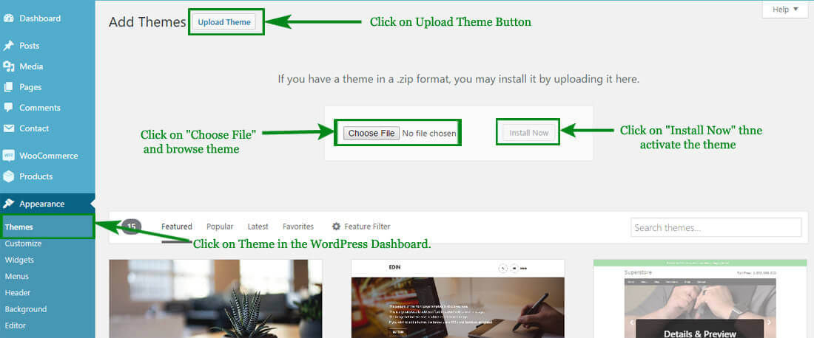
Method 2: Install Using File Transfer Protocol (FTP)
- Buy EditorialMag Pro Pro and Download the theme in your computer.
- EditorialMag Pro comes with two different file one main theme zip file and another is bundled with theme zip file, documentation zip file.
- Unzip the downloaded file, After you unzip the file you will see addition folders and ziped file, Now unzip the editorialmag-pro.zip.
- Upload the unzipped editorialmag-pro in to /wp-content/themes/
- Activate the theme by going to Appearance >> Themes and activate to install the Theme
- Click on Appearance >> Widget or Appearance >> Customizer in the Appearance Menu in the Dashboard for further setup.
Install Update Theme
- Buy EditorialMag Pro Pro and Download the theme in your computer.
- EditorialMag Pro comes with two different file one main theme zip file and another is bundled with theme zip file, documentation zip file.
- Unzip the downloaded file, After you unzip the file you will see addition folders and ziped file, Now unzip the editorialmag-pro.zip.
- Upload the unzipped editorialmag-pro in to /wp-content/themes/
- Activate the theme by going to Appearance >> Themes and activate to install the Theme
- Click on Appearance >> Widget or Appearance >> Customizer in the Appearance Menu in the Dashboard for further setup.
Activate the theme
-
Log in to the WordPress Administration Panel.
-
Go to Appearance > Themes in the WordPress menu
-
Hover over the theme thumbnail and click the Activate button.
To install a plugin in your WordPress admin panel and follow the following steps.
Plugin Installing Method
- Log into your WordPress site and opens the Administration Panel.
- Click Navigate to Plugins > Add New in the WordPress Dashboard.
- Search for the name of the plugin you wish to install which will return a list of potential plugins.
- Click Details to read more about a plugin.
- Click “Install Now” if you wish to install the plugin.
- It may ask if you are sure, and you may proceed. The installation will commence once you confirm to proceed.
- After the plugin is downloaded. Go to Plugins>Installed Plugins. Click “Activate Plugin” to make it available for use.

Recommended Plugins : We recommend you to download the following plugins when necessary:
- Share Buttons by AddThis by The AddThis Team, Share Buttons by AddThis
- Social Media Share Buttons | MashShare by René Hermenau, Social Media Share Buttons | MashShare
- Jetpack by WordPress.com, by: Automattic (The plugin provides a variety of complementary features for your Theme.)
- Regenerate Thumnails by Alex Mills (Viper007Bond) (If you have existing content, this will help you update your image thumbnails sizes.)
- WooCommerce by woocommerce.com, by: Automattic (The most customizable eCommerce platform for building your online siness. Get started today for free.)
One Click To Install Demo Data
- Go to Appearance > Customize
- Click On > Import Data Demo Section
- Open Import Data Demo & Click on 'Import Demo' button
- When Your Demo Data have Import Sucessfully then you have to get one Popup Message(Demo Data Sucessfully Imported).
Note :- It might take few minutes for importing the demo contents so please have patience. Importing demo will override all the existing customizer themes options, widget value/settings which is irreversible so please proceed with caution. .
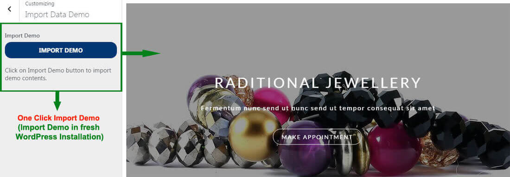
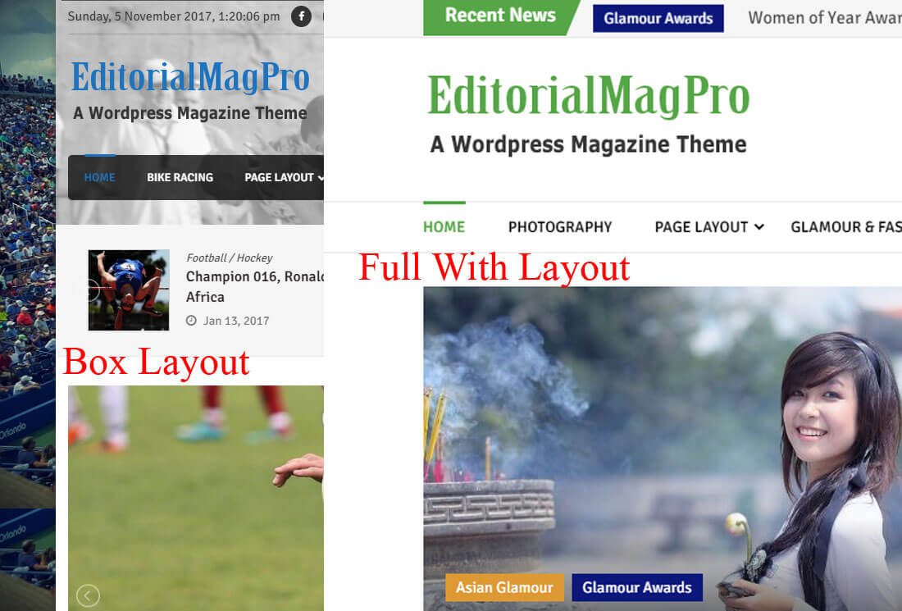
Web Page Layout Options
- Go to Appearance > Customize > Boxed/Fullwidth Settings
- Open Boxed/Fullwidth Settings > WebPage Layout
- Select the WebSite Layout Options (Boxed Layout, FullWidth Layout) per as you want
- Click Save & Publish.
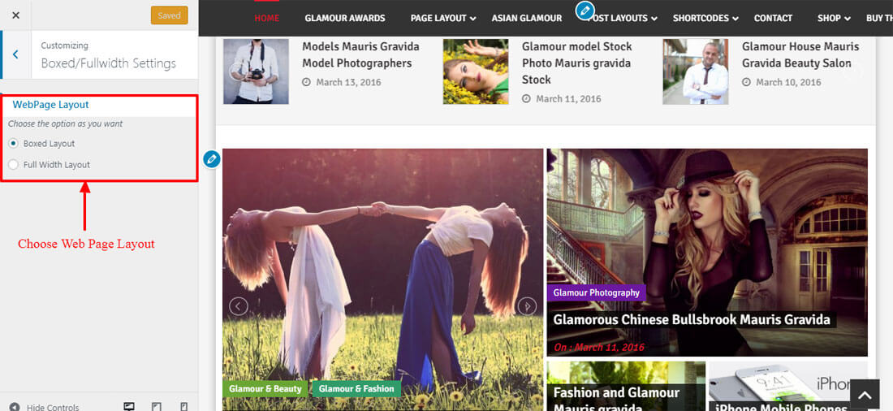
Logo/Site Title/Favicon (To set up Site Identity)
- Go to Appearance> Customize > General Settings > Site Identity
- Click Select logo by clicking Select Logo.
- Upload and select the desired image.
- Enter the Site Title and Tagline
- Check Display Header Text for the Site title and Tagline to appear on your homepage.
- Click Select Image under Site Icon
- Upload and select the desired image. (The Site Icon/ favicon is used as a browser and app icon for your site. The recommended Site Icon size is 512*512 pixels.)
- Click Save & Publish.
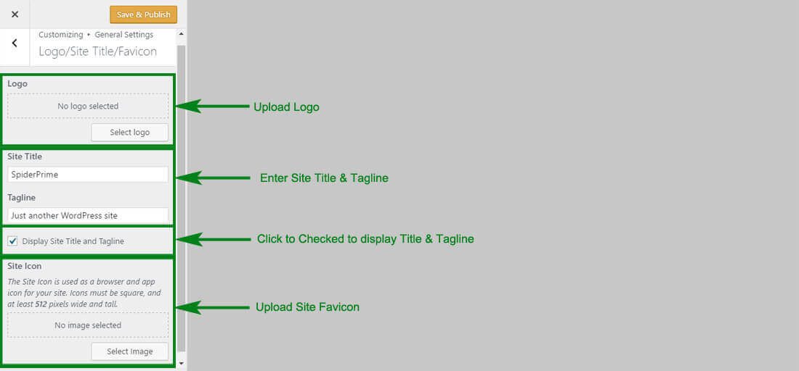
Background Image
- Go to Appearance > Customize > General Settings > Background Image
- Click Select Image.
- Upload and Select a Background Image & Manage the image position & other settings
- Click Save & Publish.
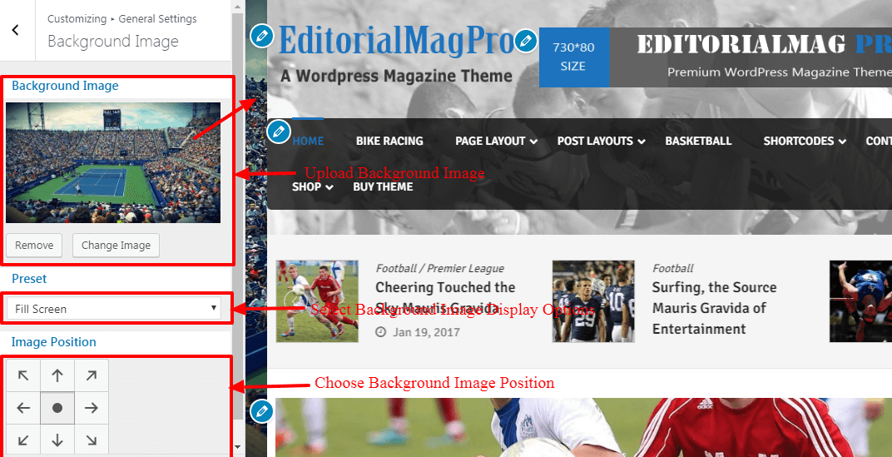
To set the Header Image
- Go to Appearance > Customize > General Settings > Header Image
- Upload the header image from the Add new image button. After selecting the header image, it will ask you to crop. If you like to crop it, then, you can crop else leave it as you want for your site to best suit it.
- Click Save & Publish.
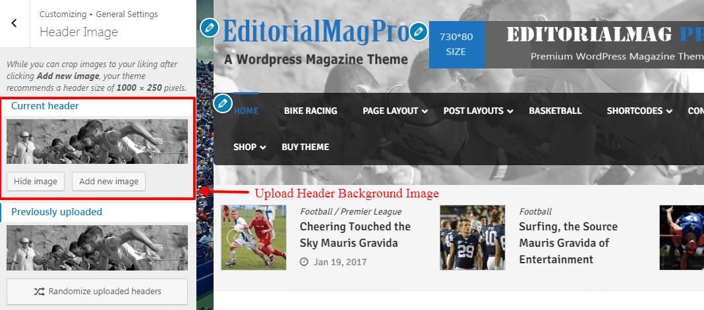
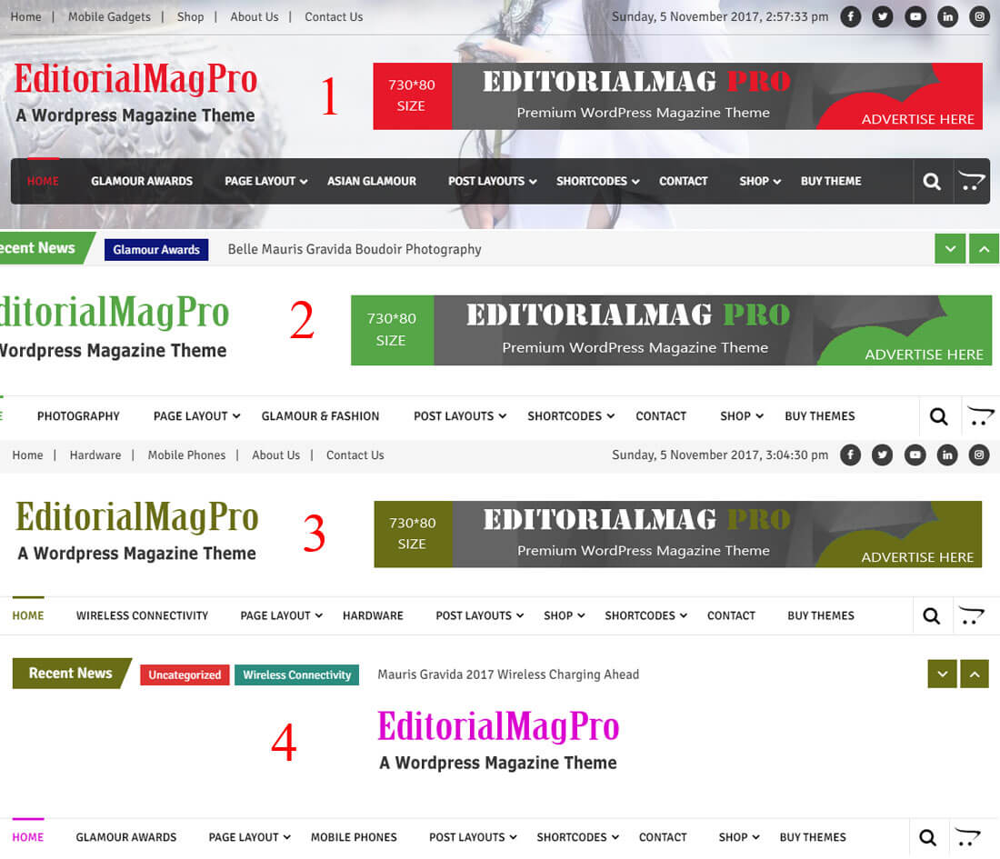
Configer Main Header Settings
- Log into your WordPress site and opens the Administration Panel.
- Go to Dashboard > Appearance > Customize
- Open > Main Header Settings
- Manage all settings main header options with "Header Type Options" per as you want.
- Click Save & Publish.
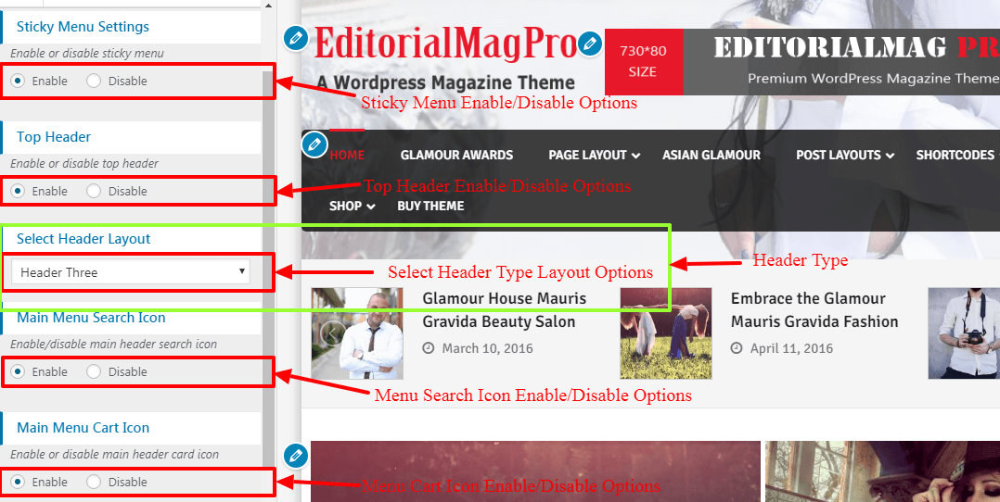
EditorialMag Pro Provides a "Home Page" template for your home page. Please follows these steps to configure your home page with "Editorial - FrontPage" template.
HomePage Setting
-
Log into your WordPress site and opens the Administration Panel.
-
Go to Dashboard > Pages > Add New
-
Enter the Page Title for the Page. You do not require to enter anything in the content section for creating a home page.
-
Select the Home Page Template from the Page Attributes section.
-
Click Publish
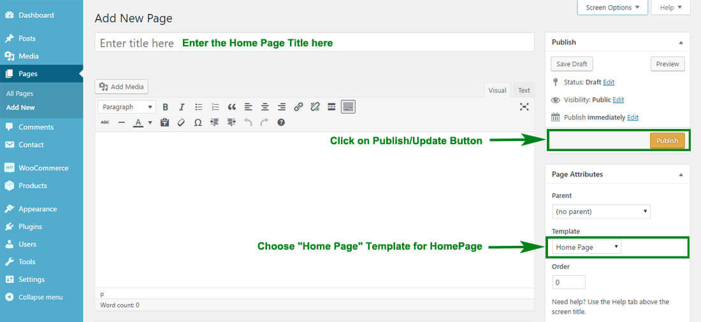
Configuring the front Page display setting
-
Log into your WordPress site and opens the Administration Panel.
-
Go to Appearance > Customize > Static Front Page.
-
Select A static page under Front Page displays.
-
Click Save & Publish.
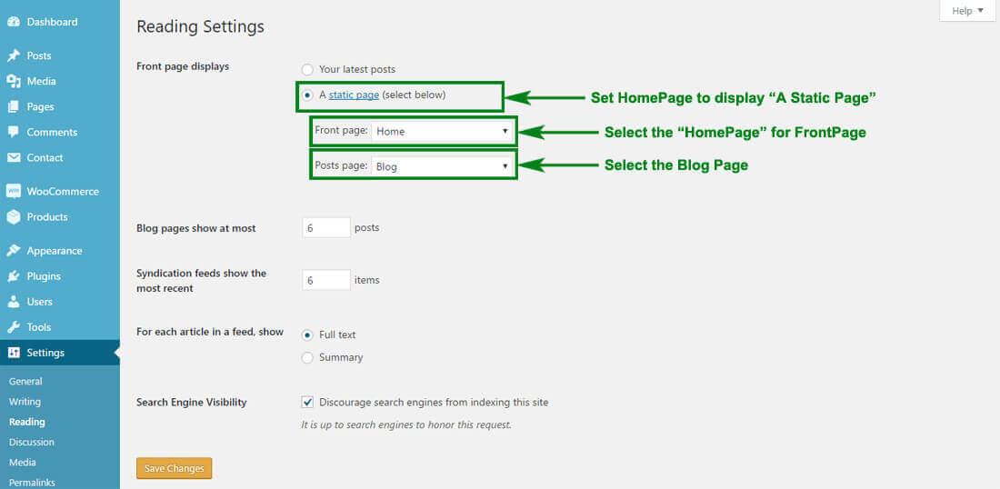
Note : Remember that EditorialMag Pro News/Magazine themes fully base on Widget so first configer home page using widget.
EMag : Slider With Normal Posts
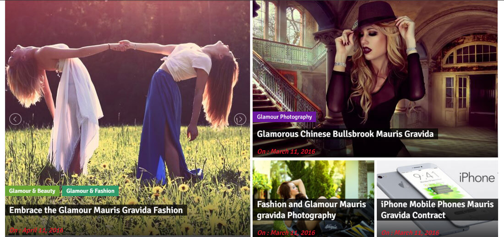
Configure EMag : Slider With Normal Posts
- Log into your WordPress site and opens the Administration Panel.
- Go to Dashboard > Appearance > Widgets
- Open > Widgets > Home 1, Home 2, Home 2 or any sidebar or footer widget area.
- Drag & Drop "EMag : Slider With Normal Posts" & Manage All EMag : Slider With Normal Posts Widget Options Per as You Want
- Click Save > Publish.
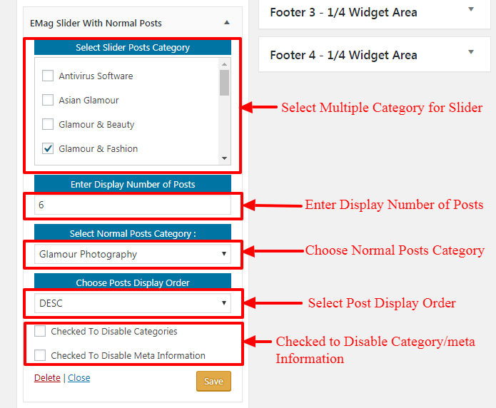
EMag : Slider Posts
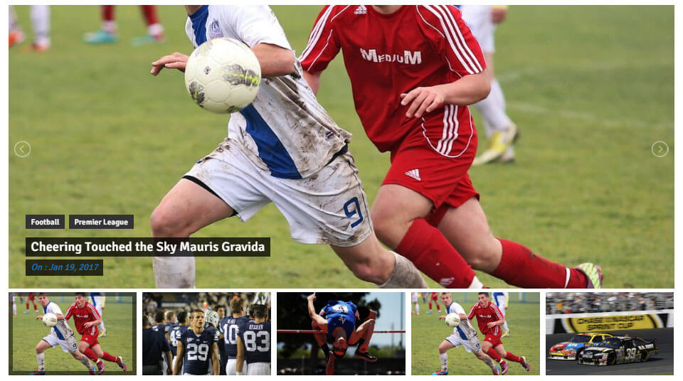
Configure EMag : Slider Posts
- Log into your WordPress site and opens the Administration Panel.
- Go to Dashboard > Appearance > Widgets
- Open > Widgets > Home 1, Home 2, Home 2 or any sidebar or footer widget area.
- Drag & Drop "EMag : Slider Posts" & Manage All EMag : Slider Posts Widget Options Per as You Want
- Click Save > Publish.
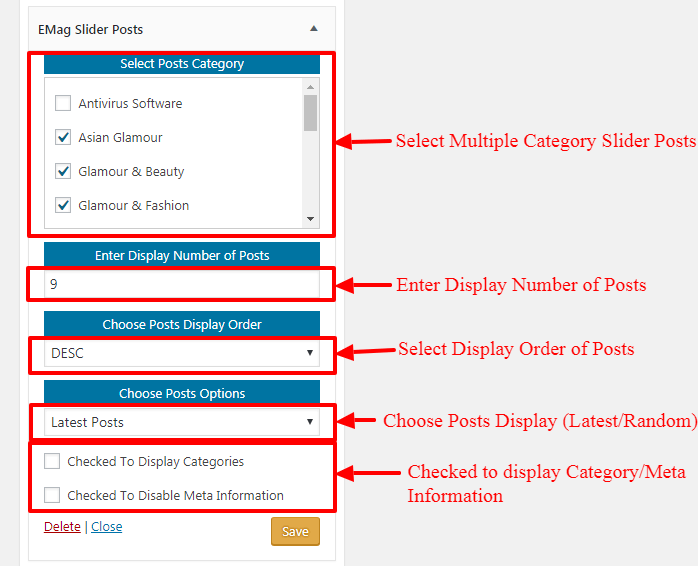
EMag : Carousel Slider Posts
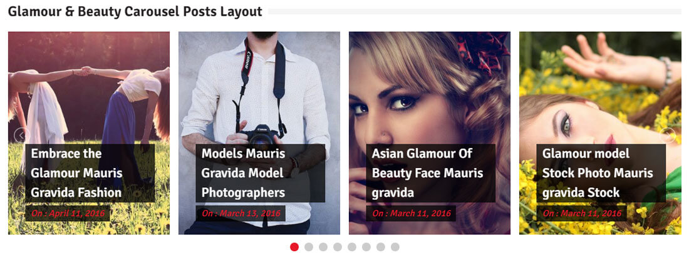
Configure EMag : Carousel Slider Posts
- Log into your WordPress site and opens the Administration Panel.
- Go to Dashboard > Appearance > Widgets
- Open > Widgets > Home 1, Home 2, Home 2 or any sidebar or footer widget area.
- Drag & Drop "EMag : Carousel Slider Posts" & Manage All EMag : Carousel Slider Posts Widget Options Per as You Want
- Click Save > Publish.
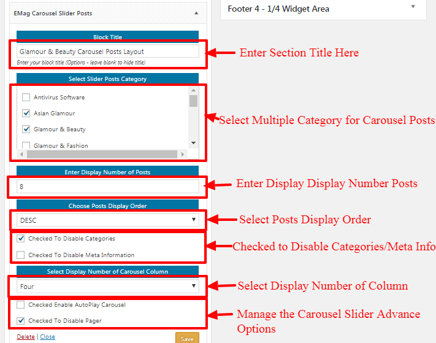
EMag : Large With Grid Posts
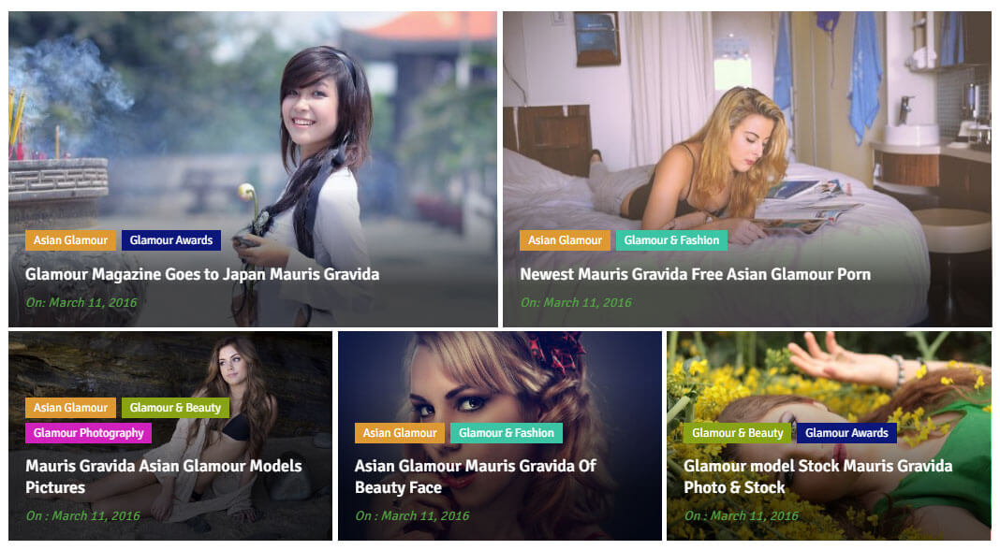
Configure EMag : Large With Grid Posts
- Log into your WordPress site and opens the Administration Panel.
- Go to Dashboard > Appearance > Widgets
- Open > Widgets > Home 1, Home 2, Home 2 or any sidebar or footer widget area.
- Drag & Drop "EMag : Large With Grid Posts" & Manage All EMag : Large With Grid Posts Widget Options Per as You Want
- Click Save > Publish.
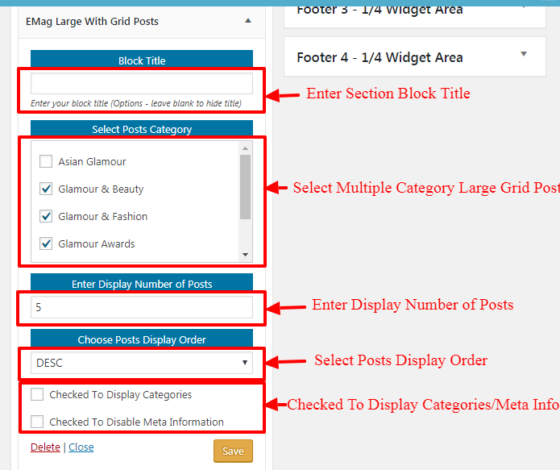
EMag : Grid Posts

Configure EMag : Grid Posts
- Log into your WordPress site and opens the Administration Panel.
- Go to Dashboard > Appearance > Widgets
- Open > Widgets > Home 1, Home 2, Home 2 or any sidebar or footer widget area.
- Drag & Drop "EMag : Grid Posts" & Manage All EMag : Grid Posts Widget Options Per as You Want
- Click Save > Publish.
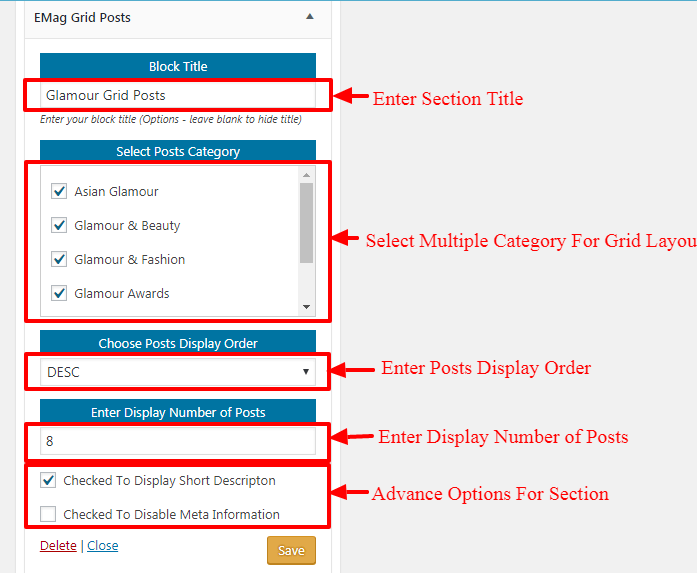
EMag : 3/1 Column Category Posts
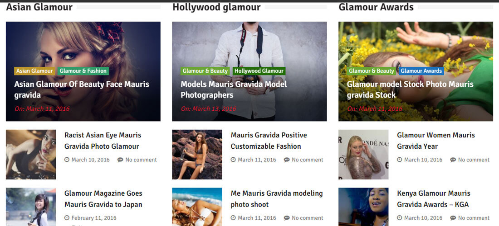
Configure EMag : 3/1 Column Category Posts
- Log into your WordPress site and opens the Administration Panel.
- Go to Dashboard > Appearance > Widgets
- Open > Widgets > Home 1, Home 2, Home 2 or any sidebar or footer widget area.
- Drag & Drop "EMag : 3/1 Column Category Posts" & Manage All EMag : 3/1 Column Category Posts Widget Options Per as You Want
- Click Save > Publish.
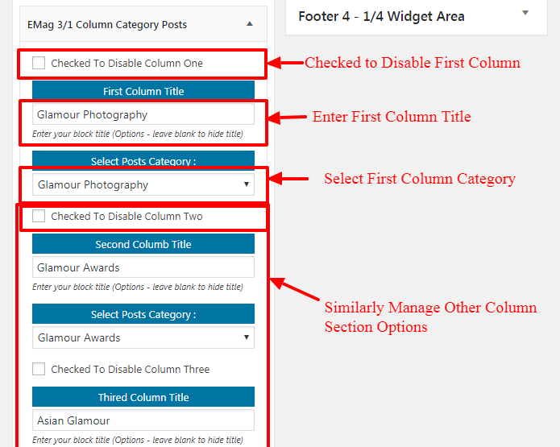
EMag : Alternative Posts
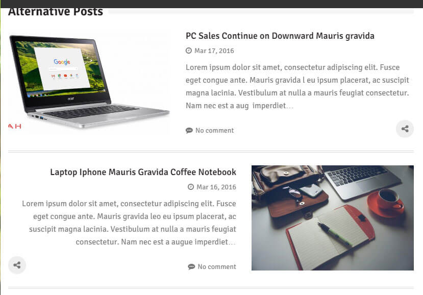
Configure EMag : Alternative Posts
- Log into your WordPress site and opens the Administration Panel.
- Go to Dashboard > Appearance > Widgets
- Open > Widgets > Home 1, Home 2, Home 2 or any sidebar or footer widget area.
- Drag & Drop "EMag : Alternative Posts" & Manage All EMag : Alternative Posts Widget Options Per as You Want
- Click Save > Publish.
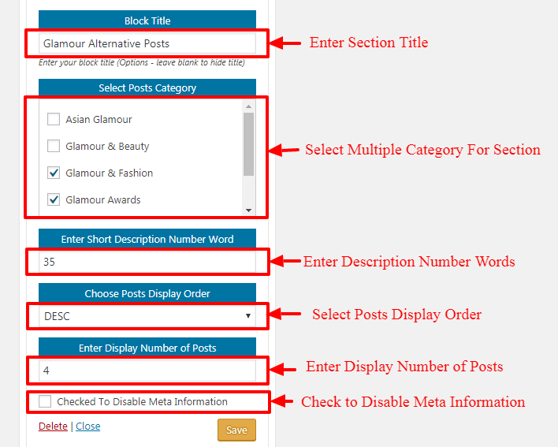
EMag : Category Tabs Posts
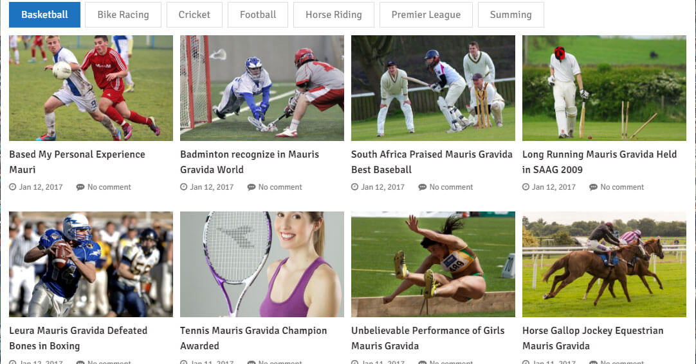
Configure EMag : Category Tabs Posts
- Log into your WordPress site and opens the Administration Panel.
- Go to Dashboard > Appearance > Widgets
- Open > Widgets > Home 1, Home 2, Home 2 or any sidebar or footer widget area.
- Drag & Drop "EMag : Category Tabs Posts" & Manage All EMag : Category Tabs Posts Widget Options Per as You Want
- Click Save > Publish.
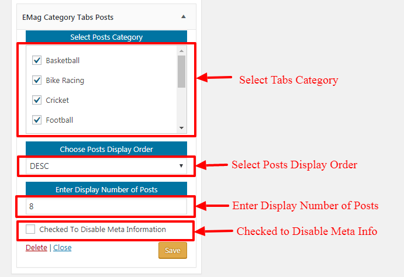
EMag : Large Single & Small Posts
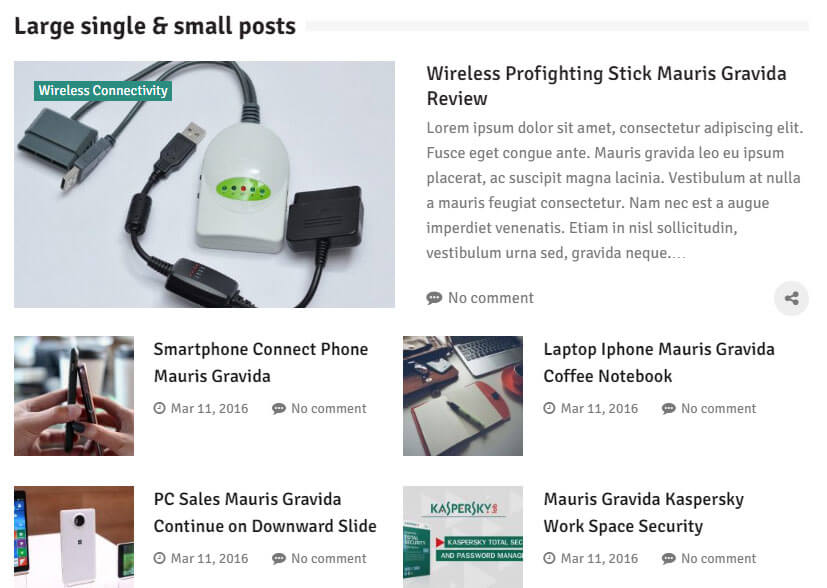
Configure EMag : Large Single & Small Posts
- Log into your WordPress site and opens the Administration Panel.
- Go to Dashboard > Appearance > Widgets
- Open > Widgets > Home 1, Home 2, Home 2 or any sidebar or footer widget area.
- Drag & Drop "EMag : Large Single & Small Posts" & Manage All EMag : Large Single & Small Posts Widget Options Per as You Want
- Click Save > Publish.
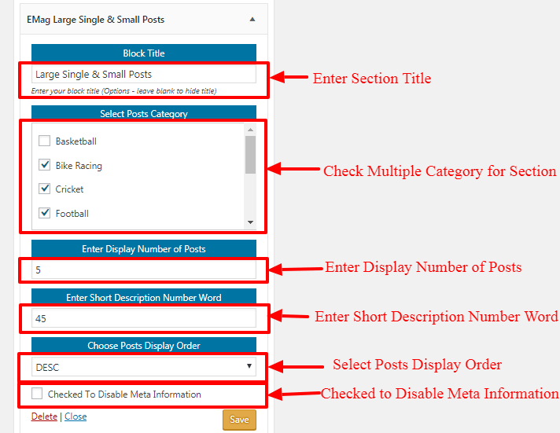
EMag : Large With Small Posts
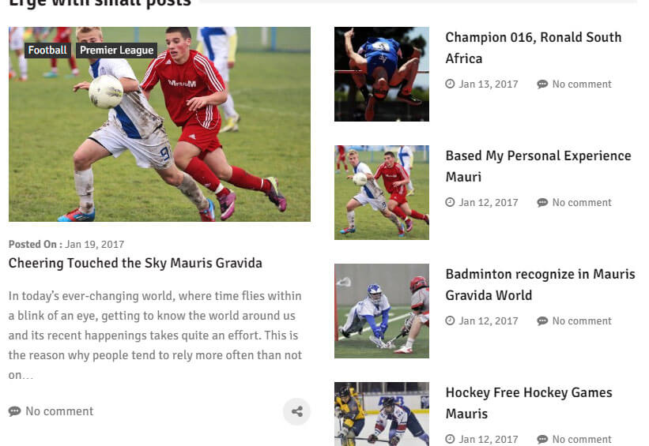
Configure EMag : Large With Small Posts
- Log into your WordPress site and opens the Administration Panel.
- Go to Dashboard > Appearance > Widgets
- Open > Widgets > Home 1, Home 2, Home 2 or any sidebar or footer widget area.
- Drag & Drop "EMag : Large With Small Posts" & Manage All EMag : Large With Small Posts Widget Options Per as You Want
- Click Save > Publish.
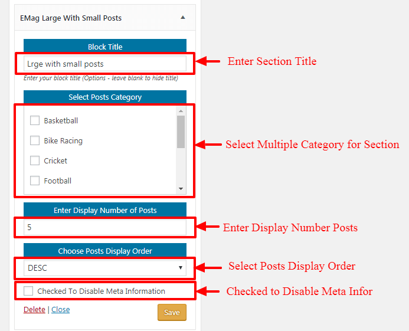
EMag : Video Posts Formats
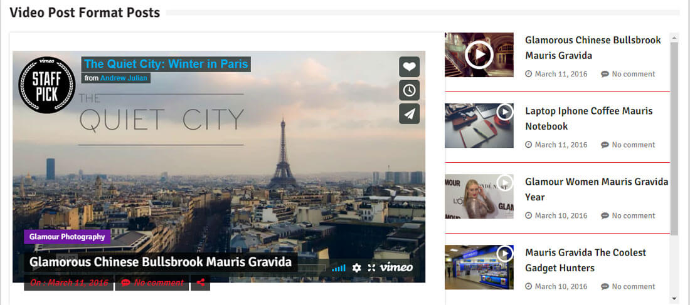
Configure EMag : Video Posts Formats
- Log into your WordPress site and opens the Administration Panel.
- Go to Dashboard > Appearance > Widgets
- Open > Widgets > Home 1, Home 2, Home 2 or any sidebar or footer widget area.
- Drag & Drop "EMag : Video Posts Formats" & Manage All EMag : Video Posts Formats Widget Options Per as You Want
- Click Save > Publish.
Note :- Video Post Formats Widget Area Only Display Post Format Video Posts
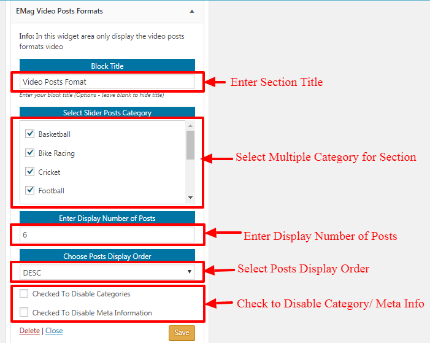
EMag : Sidebar Category Tabs Posts
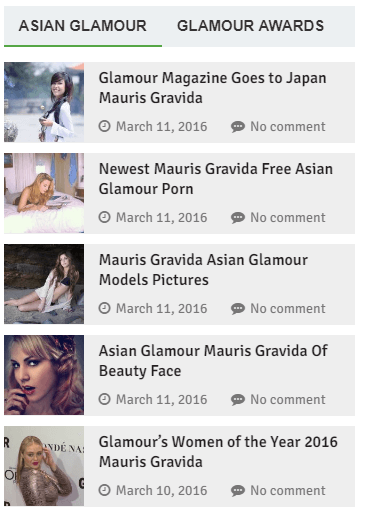
Configure EMag : Sidebar Category Tabs Posts
- Log into your WordPress site and opens the Administration Panel.
- Go to Dashboard > Appearance > Widgets
- Open > Widgets > Sidebar or Footer widget area.
- Drag & Drop "EMag : Sidebar Category Tabs Posts" & Manage All EMag : Sidebar Category Tabs Posts Widget Options Per as You Want
- Click Save > Publish.
EMag : Recent & Random Posts
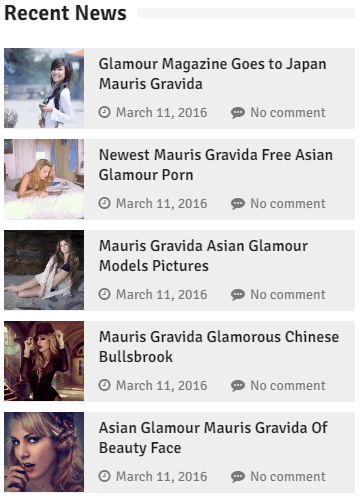
Configure EMag : Recent & Random Posts
- Log into your WordPress site and opens the Administration Panel.
- Go to Dashboard > Appearance > Widgets
- Open > Widgets > Sidebar or Footer widget area.
- Drag & Drop "EMag : Recent & Random Posts" & Manage All EMag : Recent & Random Posts Widget Options Per as You Want
- Click Save > Publish.
EMag : Popular / Tags / Comments
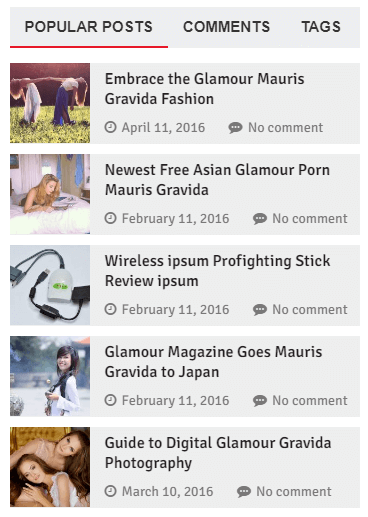
Configure EMag : Popular / Tags / Comments
- Log into your WordPress site and opens the Administration Panel.
- Go to Dashboard > Appearance > Widgets
- Open > Widgets > Sidebar or Footer widget area.
- Drag & Drop "EMag : Popular / Tags / Comments" & Manage All EMag : Popular / Tags / Comments Widget Options Per as You Want
- Click Save > Publish.
EMag : Personal Info
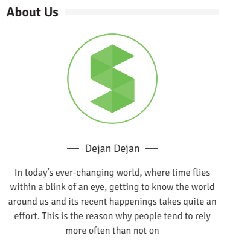
Configure EMag : Personal Info
- Log into your WordPress site and opens the Administration Panel.
- Go to Dashboard > Appearance > Widgets
- Open > Widgets > Sidebar or Footer widget area.
- Drag & Drop "EMag : Personal Info" & Manage All EMag : Personal Info Widget Options Per as You Want
- Click Save > Publish.
EMag : Timeline Posts
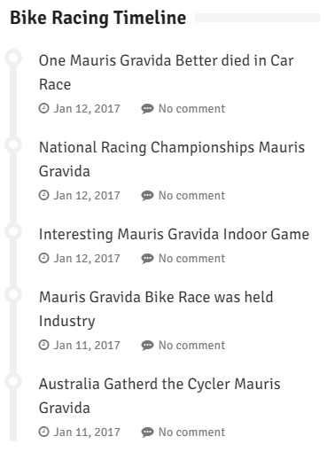
Configure EMag : Timeline Posts
- Log into your WordPress site and opens the Administration Panel.
- Go to Dashboard > Appearance > Widgets
- Open > Widgets > Sidebar or Footer widget area.
- Drag & Drop "EMag : Timeline Posts" & Manage All EMag : Timeline Posts Widget Options Per as You Want
- Click Save > Publish.
Configer Theme Colors Settings
- Go to Dashboard > Appearance > Appearance > Customize > Theme Colors Settings
- Open > Customize > Theme Colors Settings > Colors
- Manage Primary Color, Header title colro & Background Colors Options per as you choice
- Click on Button (Save & Publish)
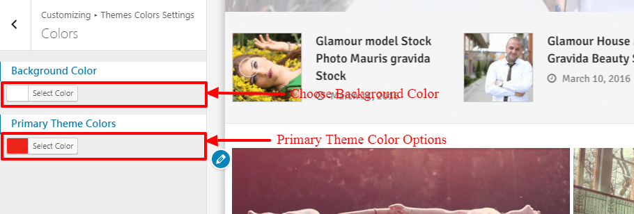
Configer Category Color Settings
- Go to Dashboard > Appearance > Appearance > Customize > Theme Colors Settings
- Open > Customize > Theme Colors Settings > Category Color Settings
- Manage category color options per as you want
- Click on Button (Save & Publish)
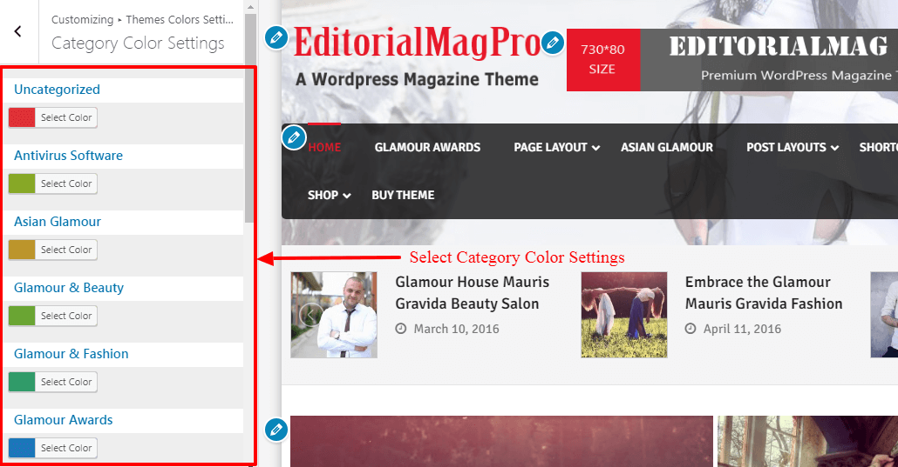
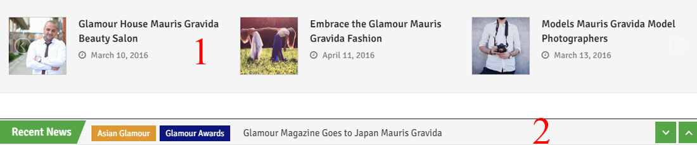
Configure Breaking News Settings
- Log into your WordPress site and opens the Administration Panel.
- Go to Dashboard > Appearance > Customize
- Open > Customizer > Breaking News Settings
- Manage all breaking news settings options per as you want.
- Click Save > Publish.
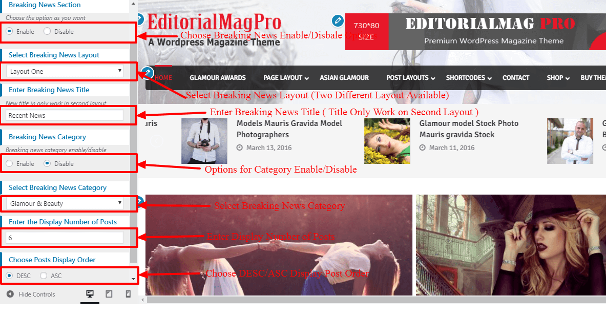
Configer Category / Archive Page Settings
- Log into your WordPress site and opens the Administration Panel.
- Go to Dashboard > Appearance > Customize
- Open > Design Layout Settings > Category / Archive Page Settings
- Category Page Advanve Settings > Manage all options & category page design layout options per as you want.
- Click Save & Publish.
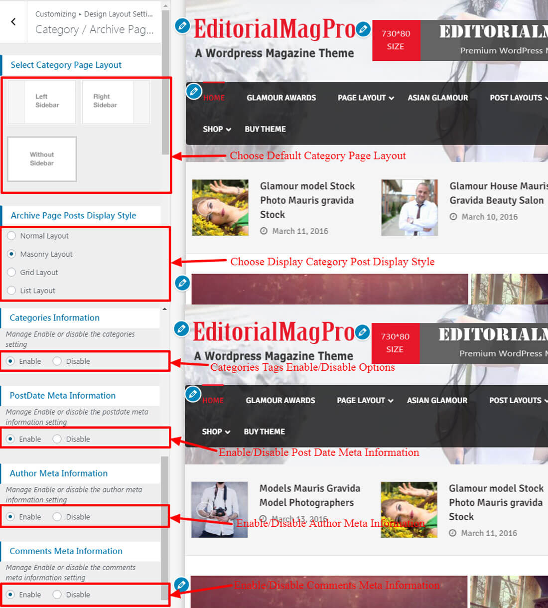
Configer Post Single Page Settings
- Log into your WordPress site and opens the Administration Panel.
- Go to Dashboard > Appearance > Customize
- Open > Design Layout Settings > Post Single Page Settings
- Post Single Page > Manage all options & single post advance settings options(Author Box, Related Posts) per as you want.
- Click Save & Publish.
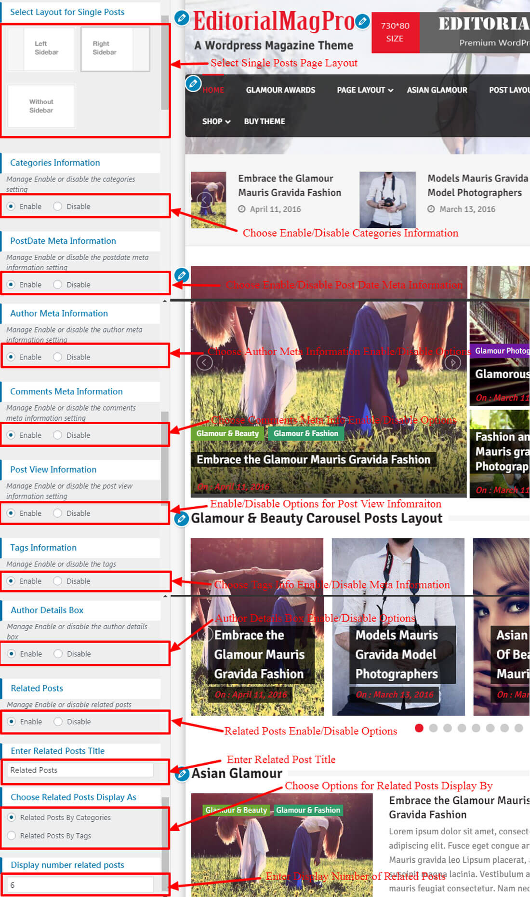
In this theme, we have included Metabox fields under Theme Layout for each page/post. They are:
Page/Post Layout Settings
-
This option allow to choose the page/post layout. This makes your specific page/post different from other pages/posts.
- Left Sidebar
- Right Sidebar
- Fulll Width
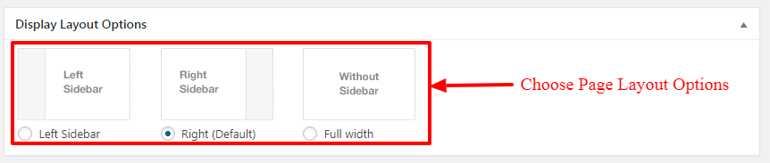
This theme supports the Custom CSS, which overwrites the CSS of the main stylesheet file, so that you can apply some CSS to change the look of the site as you desire. Also, this changes will still remain even if you update the theme.
Additional CSS
- Go to Appearance > Customize > Additional CSS
- Open > Additional CSS > Add Custom CSS per as you want
- Click Save & Publish.